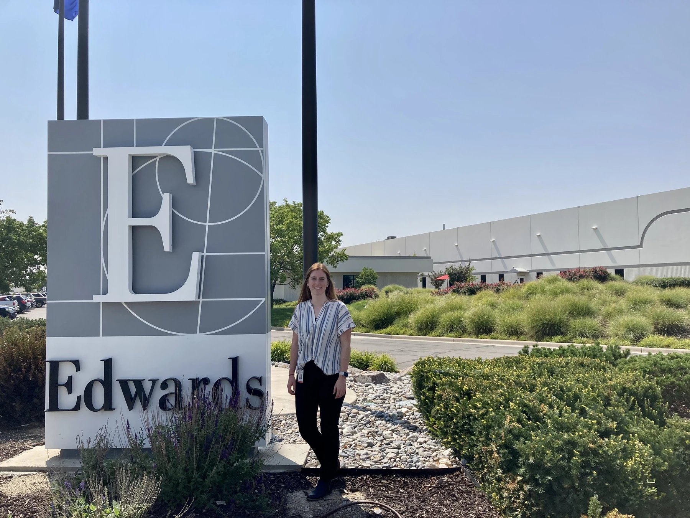
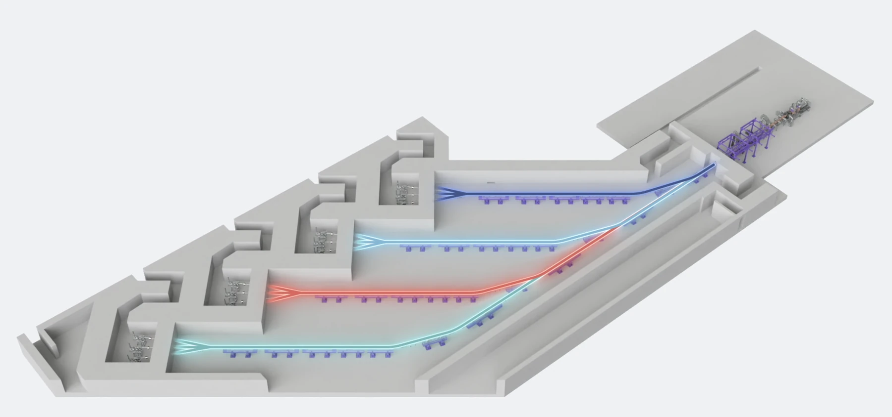
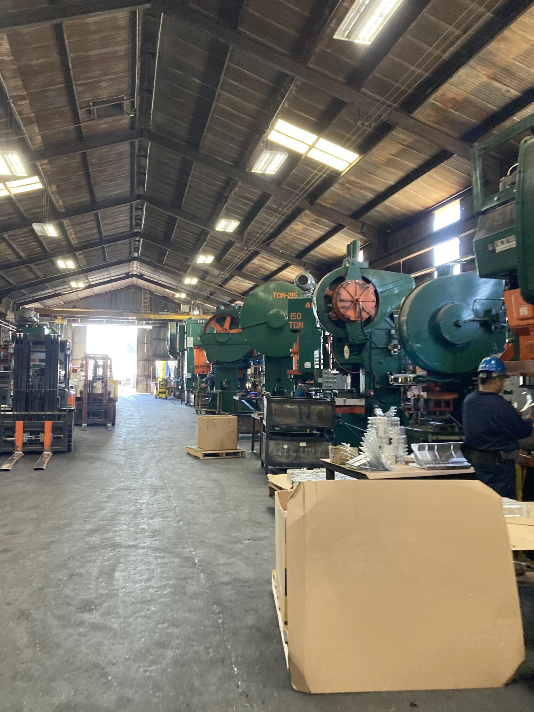

Xenter
R&D Engineering Intern · Draper, Utah
August 2025 – Present
Support new product development and manufacturing scale-up through visual inspection, sterilization validation, and cleanroom process implementation.
R&D Engineering Intern · Draper, Utah
August 2025 – Present
Support new product development and manufacturing scale-up through visual inspection, sterilization validation, and cleanroom process implementation.
Design Engineer · Salt Lake City, Utah
May 2026 – Present
Developed Elevare as my University of Utah master’s project and continue its development as a design engineer at Tensai Surgical Solutions.

Engineering Intern · Draper, Utah
Summers 2023 & 2024
Researched Nitinol springback and supported automated passivation, tooling, and manufacturing-process improvements across two summer internships.

Engineering Intern · Salt Lake City, Utah
June – August 2025
A custom copper electroplating cell and routing for 98 nitrogen lines within radioactive bunkers.

Engineering Consultant · Paramount, California
August 2024 – February 2025
Programming and integration of a Teknic motion controller for mechanical punch-press systems.
